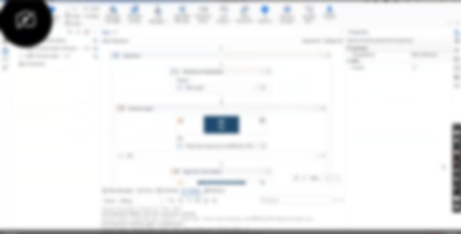
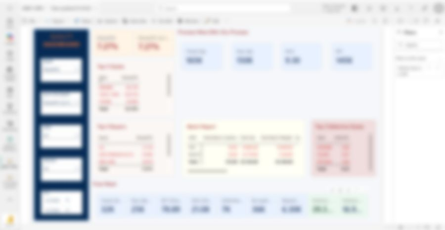
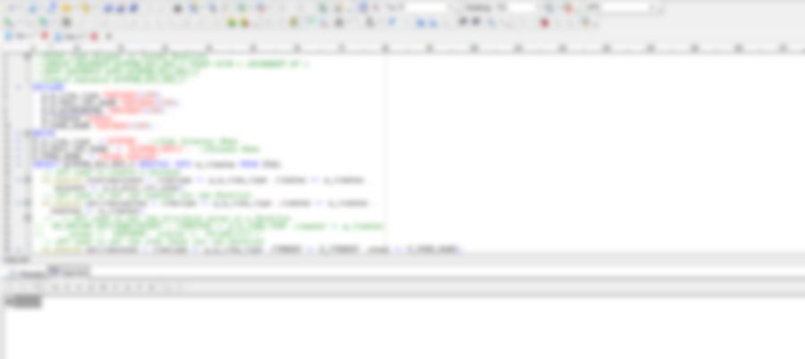

Recruitment automation robot
A UiPath robot reads job requisitions from Oracle EBS, posts the jobs on BDJobs, and collects CVs for AI-based screening.
UiPath · Oracle EBS · BDJobsI build reports, dashboards and automation on Oracle EBS for garment and apparel manufacturing, so managers get the numbers they need without manual work. Based in Dhaka, Bangladesh.

A UiPath robot reads job requisitions from Oracle EBS, posts the jobs on BDJobs, and collects CVs for AI-based screening.
UiPath · Oracle EBS · BDJobs
Tracks Rework %, Rewash %, DHU and RFT by process, shift, buyer and style for the wet process unit.
Power BI · DAX
Tuned complex SQL and PL/SQL for production, inventory aging and PO budget vs consumption reports, improving database performance by about 20%.
Oracle SQL · PL/SQLCompares Logistic Regression, Decision Tree, Random Forest, SVM and KNN on real 2024–2025 washing data to support management decisions.
Machine learning · Python · RScreenshots are blurred to protect company data.
Or write to tariqulislam.tommy@gmail.com, or find me on LinkedIn.